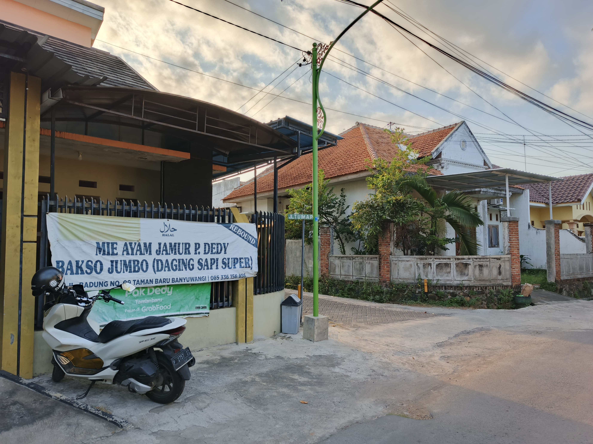
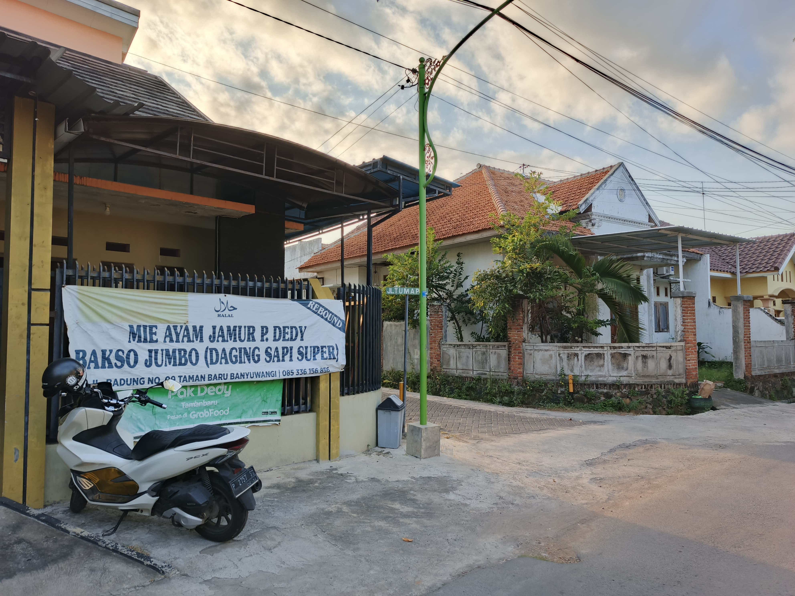

History
Rumah Makan Pak Dedy
Dedy Iswahyudi kelahiran banyuwangi yang membuka usaha Rumah Makan Mie Ayam. Dulunya ia bekerja sebagai pegawai hotel di Bali namun ia tidak lagi bekarja disana dan sekarang membuka usaha Rumah Makan. Awal usaha pada tahun 2010 di jl. Agusalim. Ia sudah terbiasa membuat mie menggunakan bahan-bahan sehat seperti dari wortel,buah naga, daun katu. Pada 2015 ia kembali bekerja di hotel bali. lalu pada tahun 2019 ia kembali ke banyuwangi untuk membuka i warung mie ayam lagi di jalan badung alasan berhenti bekerja di bali dikarenakan ia sering pulang pergi banyuwangi bali untuk keluarga nya


 
